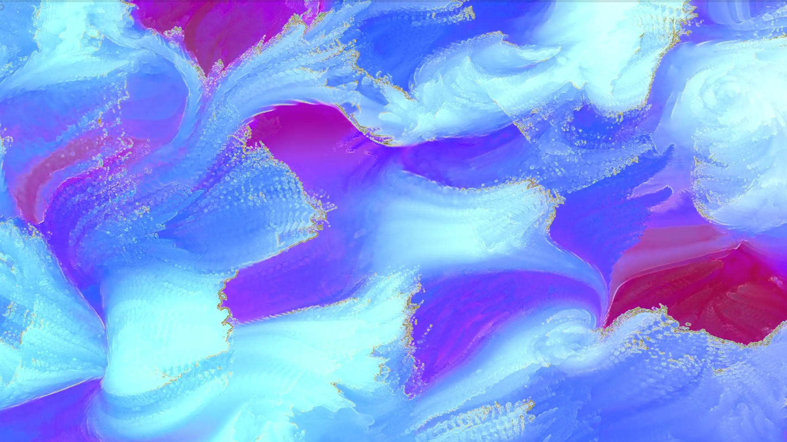
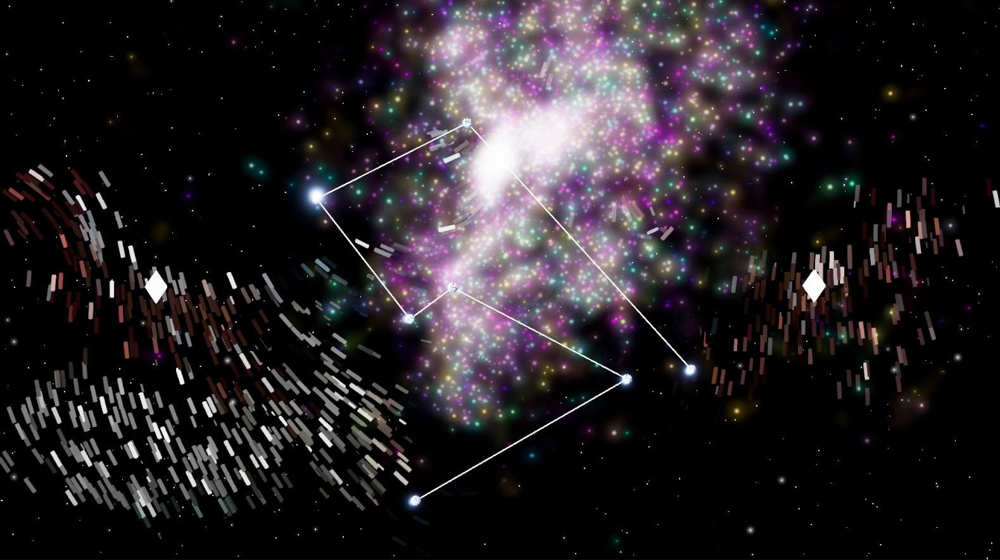
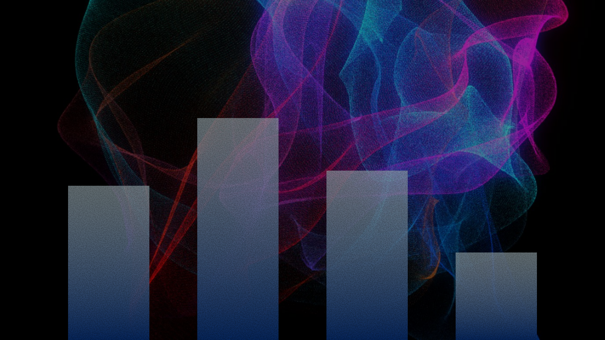

Category
Tech

Portfolio Site Main Visual

Constellate

Hi, I'm MizukiFujita.
I create interactive experiences using Unity and TouchDesigner.
My goal is to craft visuals that anyone can enjoy intuitively,
bridging the gap between complex technology and pure wonder.
直感的で、誰もが楽しめる体験を。
UI/UXデザインの視点を活かし、UnityやTouchDesignerを用いたインタラクティブアートを制作しています。
難解な文脈を必要とせず、見た瞬間に「すごい」「面白い」と感じられる、鑑賞者との距離が近い作品作りを目指しています。


